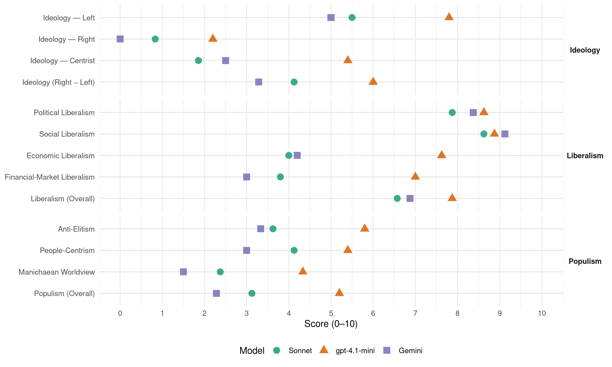

90/Greens (Germany, 2013)
manifesto_id 41113_201309
Get full text: This site shows derived annotations and short verbatim quotes only. The full manifesto text is © Manifesto Project / WZB — obtain it via manifesto-project.wzb.eu using the manifesto_id above.
Headline scores
| Dimension | Sonnet | gpt-4.1-mini | Gemini |
|---|---|---|---|
| Populism (Overall) | 3.1 | 5.2 | 2.3 |
| Anti-Elitism | 3.6 | 5.8 | 3.3 |
| People-Centrism | 4.1 | 5.4 | 3.0 |
| Manichaean Worldview | 2.4 | 4.3 | 1.5 |
| Ideology (Right − Left) | 4.1 | 6.0 | 3.3 |
| Liberalism (Overall) | 6.6 | 7.9 | 6.9 |
| Political Liberalism | 7.9 | 8.6 | 8.4 |
| Social Liberalism | 8.6 | 8.9 | 9.1 |
| Economic Liberalism | 4.0 | 7.6 | 4.2 |
| Financial-Market Liberalism | 3.8 | 7.0 | 3.0 |
Evidence per dimension
Economic Liberalism
Gemini · score 5.0 · mixed · chunk 1
“soziale und ökologische Neubegründung unserer Marktwirtschaft”
Wir arbeiten so an einer soziale und ökologische Neubegründung unserer Marktwirtschaft. Wir schaffen endlich klare Regeln für die Finanzmärkte.
Gemini · score 6.0 · mixed · chunk 2
“Märkten mit einer werteorientierten Ordnungspolitik”
hunderttausende neuer Jobs. Wir setzen den Märkten mit einer werteorientierten Ordnungspolitik klare soziale und ökologische Leitplanken. Preise
Gemini · score 4.0 · verified · chunk 3
“streiten wir für einen flächendeckenden gesetzlichen Mindestlohn”
Wir brauchen wieder soziale Leitplanken auf dem Arbeitsmarkt. Darum streiten wir für einen flächendeckenden gesetzlichen Mindestlohn von mindestens 8,50 Euro.
Gemini · score 3.0 · verified · chunk 4
“Subventionierung der Massentierhaltung gehört abgeschafft”
Die Subventionierung der Massentierhaltung gehört abgeschafft, genau wie ihre Privilegien im Baurecht.
Gemini · score 6.0 · verified · chunk 5
“schadet dem freien Wettbewerb”
ist das Abzocke an der VerbraucherIn und schadet dem freien Wettbewerb.
Gemini · score 4.0 · verified · chunk 7
“nicht allein den Kräften des Marktes überlassen”
Die Entwicklung darf nicht allein den Kräften des Marktes überlassen werden. Mehr Unterstützung und Vermittlung seitens der Politik
Gemini · score 4.0 · verified · chunk 8
“Primat der Politik über unregulierte Märkte”
Dazu müssen wir das Primat der Politik über unregulierte Märkte zurückgewinnen. Märkte brauchen Regeln
gpt-4.1-mini · score 8.0 · verified · chunk 1
“Wir setzen den Märkten mit einer werteorientierten Ordnungspolitik klare soziale und ökologische Leitplanken”
Wir setzen den Märkten mit einer werteorientierten Ordnungspolitik klare soziale und ökologische Leitplanken. Preise müssen die ökologische und soziale Wahrheit sprechen. Unter diesen Voraussetzungen können Märkte einen Innovationsschub für den sparsamen Einsatz von Energie und Ressourcen und für neue Technologien, die weltweit gefragt sind, bewirken.
gpt-4.1-mini · score 7.0 · verified · chunk 2
“Preise müssen die ökologische und soziale Wahrheit sprechen”
Wir setzen den Märkten mit einer werteorientierten Ordnungspolitik klare soziale und ökologische Leitplanken. Preise müssen die ökologische und soziale Wahrheit sprechen. Unter diesen Voraussetzungen können Märkte einen Innovationsschub für den sparsamen Einsatz von Energie und Ressourcen und für neue Technologien, die weltweit gefragt sind, bewirken.
gpt-4.1-mini · score 7.0 · verified · chunk 3
“Wir führen eine zeitlich befristete Vermögensabgabe ein, die das reichste Prozent der deutschen Bevölkerung betrifft”
…Die grüne Vermögensabgabe fließt zu 100 % in die Schuldentilgung. Wir führen eine zeitlich befristete Vermögensabgabe ein, die das reichste Prozent der deutschen Bevölkerung betrifft. Die Betriebsvermögen schützen wir und eine Substanzbesteuerung wird vermieden…
gpt-4.1-mini · score 7.0 · verified · chunk 4
“Wir wollen eine Pflegebürgerversicherung einführen”
Die Pflegeversicherung muss auf eine solide finanzielle Grundlage gestellt werden. Hierzu wollen wir alle BürgerInnen und alle Einkommen einbeziehen und die Pflege-Bürgerversicherung einführen. Mit ihr ist eine bessere Pflege bezahlbar.
gpt-4.1-mini · score 8.0 · verified · chunk 5
“Wir wollen mehr Wettbewerb, mehr Preistransparenz und weniger Macht für die großen Strom- und Mineralölkonzerne”
3. Energie zu fairen Preisen Wir kämpfen für faire Energiepreise – gegen Preistreiberei durch Monopole und Marktmanipulationen. Deshalb wollen wir mehr Wettbewerb, mehr Preistransparenz und weniger Macht für die großen Strom- und Mineralölkonzerne. Faire Preise, nicht Dumpingpreise, sind unser Ziel. Faire Strompreise erfordern eine gerechtere Finanzierung der Energiewende. Wir wollen die Energiewende solidarisch finanzieren, überbordende Industrieprivilegien abbauen und dafür sorgen, dass die StromkundInnen auch von den gesunkenen Preisen an der Strombörse profitieren.
gpt-4.1-mini · score 8.0 · verified · chunk 6
“Wir wollen Datenschutz durch Technik („Privacy by Design”) und Datenschutz durch Voreinstellung („Privacy by Default”) voranbringen”
2. Daten schützen, Freiheit sichern Noch nie wurde so viel an persönlichen Daten erfasst, gespeichert und übermittelt wie heute. Daten werden gesammelt, ausgewertet und zusammengefasst. Die Stärkung der informationellen Selbstbestimmung ist für uns zentrales Leitbild für einen modernen Datenschutz. BürgerInnen müssen wissen, wer was wann und wo speichert und übermittelt. Wir wollen Datenschutz durch Technik („Privacy by Design”) und Datenschutz durch Voreinstellung („Privacy by Default”) voranbringen und dafür auch ein geschütztes Gütesiegel einführen.
gpt-4.1-mini · score 8.0 · verified · chunk 7
“Privates Kultur-Sponsoring ist wichtig; es kann allein aber keine Grundlage für künstlerische und kulturelle Entfaltung liefern.”
2. Gerechtigkeit für alle Kulturschaffenden Eine Gesellschaft ohne KünstlerInnen und Kreative ist arm und leer. Privates Kultur-Sponsoring ist wichtig; es kann allein aber keine Grundlage für künstlerische und kulturelle Entfaltung liefern.
gpt-4.1-mini · score 8.0 · verified · chunk 8
“Märkte brauchen Regeln, damit sie dem Gemeinwohl dienen”
Märkte brauchen Regeln, damit sie dem Gemeinwohl dienen. Nur so ist Wohlstand für die wachsende Weltbevölkerung möglich und führt wirtschaftliches Wachstum nicht zum Kollaps.
Sonnet · score 5.0 · mixed · chunk 1
“soziale und ökologische Neubegründung unserer Marktwirtschaft”
Wir arbeiten so an einer sozialen und ökologischen Neubegründung unserer Marktwirtschaft. Wir schaffen endlich klare Regeln für die Finanzmärkte.
Sonnet · score 5.0 · mixed · chunk 2
“Märkte einen Innovationsschub”
Unter diesen Voraussetzungen können Märkte einen Innovationsschub für den sparsamen Einsatz von Energie und Ressourcen und für neue Technologien bewirken.
Sonnet · score 4.0 · verified · chunk 3
“Wir wollen den Spitzensteuersatz für Einkommen ab 80.000 Euro auf 49 %”
Wir wollen deshalb den Spitzensteuersatz für Einkommen ab 80.000 Euro auf 49 % erhöhen.
Sonnet · score 4.0 · verified · chunk 4
“umweltschädliche Subventionen streichen”
indem wir umweltschädliche Subventionen streichen, Einfluss auf die Preisgestaltung von Ressourcen nehmen und nachhaltige Lebensstile ermöglichen
Sonnet · score 5.0 · mixed · chunk 5
“mehr Wettbewerb, mehr Preistransparenz”
Deshalb wollen wir mehr Wettbewerb, mehr Preistransparenz und weniger Macht für die großen Strom- und Mineralölkonzerne.
Sonnet · score 5.0 · mixed · chunk 6
“Minijobs müssen sozialverträglich ersetzt werden”
Die sogenannten Minijobs müssen sozialverträglich ersetzt werden. In der Kombination mit der Mitversicherung in der Krankenversicherung und dem Ehegattensplitting behindern sie die eigenständige Existenzsicherung.
Sonnet · score 5.0 · mixed · chunk 7
“Entwicklung darf nicht allein den Kräften des Marktes”
Die Entwicklung darf nicht allein den Kräften des Marktes überlassen werden. Mehr Unterstützung und Vermittlung seitens der Politik sind hier notwendig
Sonnet · score 4.0 · mixed · chunk 8
“Primat der Politik über unregulierte Märkte”
Dazu müssen wir das Primat der Politik über unregulierte Märkte zurückgewinnen. Märkte brauchen Regeln, damit sie dem Gemeinwohl dienen.
Financial-Market Liberalism
Gemini · score 3.0 · verified · chunk 1
“Wir schaffen endlich klare Regeln für die Finanzmärkte”
Wir arbeiten so an einer sozialen und ökologischen Neubegründung unserer Marktwirtschaft. Wir schaffen endlich klare Regeln für die Finanzmärkte. Gute Arbeit, gute Löhne
Gemini · score 4.0 · mixed · chunk 2
“Finanzmärkte in Europa müssen wir endlich”
guter“ Politik und „schlechter“ Ökonomie greift zu kurz. Die Finanzmärkte in Europa müssen wir endlich an die Leine nehmen, indem wir die verfehlte
Gemini · score 3.0 · verified · chunk 3
“Daneben wollen wir Kapitalerträge wie alle anderen Einkommen besteuern”
Wir wollen deshalb den Spitzensteuersatz für Einkommen ab 80.000 Euro auf 49 % erhöhen. Daneben wollen wir Kapitalerträge wie alle anderen Einkommen besteuern. Bisher werden Kapitalerträge, egal ob 10.000 oder 1 Mio. Euro, fest mit 25 % besteuert und damit ohne Grund gegenüber Einkommen aus Arbeit privilegiert.
Gemini · score 3.0 · verified · chunk 5
“Dispo-Wucher wollen wir durch einen Zinsdeckel verhindern”
Dispo-Wucher wollen wir durch einen Zinsdeckel verhindern und unseriösen Inkasso- und Abmahndiensten
Gemini · score 3.0 · verified · chunk 7
“global agierenden Akteuren an den Finanzmärkten selbstbewusst”
eine handlungsfähige EU, die den global agierenden Akteuren an den Finanzmärkten selbstbewusst entgegentritt.
Gemini · score 3.0 · verified · chunk 8
“Einnahmen aus der Finanztransaktionssteuer”
Wir wollen neue Finanzierungsinstrumente einsetzen, wie die Einnahmen aus der Finanztransaktionssteuer und einer erhöhten Flugticketabgabe.
gpt-4.1-mini · score 7.0 · verified · chunk 1
“Wir schaffen endlich klare Regeln für die Finanzmärkte”
Wir schaffen endlich klare Regeln für die Finanzmärkte. Gute Arbeit, gute Löhne, mehr Mitsprache der Beschäftigten – all das kann und muss zum wirtschaftlichen und sozialen Erfolg beitragen.
gpt-4.1-mini · score 7.0 · verified · chunk 2
“Wir wollen eine gemeinsame Bankenaufsicht mit einem einheitlichen Regelwerk”
Wir wollen eine gemeinsame Bankenaufsicht mit einem einheitlichen Regelwerk. International aktive Banken sollten von der neuen europäischen Bankenaufsicht direkt beaufsichtigt werden, kleine Institute mit ausschließlich regionalem Geschäft müssen nicht laufend von einer europäischen Institution beaufsichtigt werden.
gpt-4.1-mini · score 7.0 · verified · chunk 3
“Wir wollen mehr, nicht weniger Solidarität. Die grüne Bürgerversicherung bezieht alle Bürgerinnen und Bürger in die Solidargemeinschaft ein”
…Die grüne Bürgerversicherung ist keine Einheitsversicherung. Sowohl die gesetzlichen als auch private Krankenversicherer können die Bürgerversicherung anbieten. Allerdings gilt eine gemeinsame Honorarordnung…
gpt-4.1-mini · score 7.0 · verified · chunk 5
“Wir brauchen eine einheitliche und schlagkräftige Finanzaufsicht mit Verbraucherschutz als Kernaufgabe”
Schlüsselprojekte Abzocke beenden – Finanzmärkte verbrauchergerecht regulieren Bei Finanzgeschäften werden zu viele abgezockt. Deshalb müssen wir den Verbraucherschutz umfassend stärken – vom unabhängigen Finanzmarktwächter, über den Rechtsanspruch auf ein eigenes Girokonto bis hin zum Schutz gegen betrügerische Anlagemodelle. Wir brauchen eine einheitliche und schlagkräftige Finanzaufsicht mit Verbraucherschutz als Kernaufgabe, die durch einen Finanzmarktwächter unter dem Dach der Verbraucherzentralen ergänzt wird.
gpt-4.1-mini · score 7.0 · verified · chunk 6
“Wir wollen im Rahmen der anstehenden Parteiengesetzreform die Spendenmöglichkeit auf natürliche Personen mit einer jährlichen Obergrenze beschränken”
Wir sorgen für mehr Klarheit mit einem Korruptionsregister für wirtschaftskriminell auffällig gewordene Unternehmen. Mit einem verpflichtenden Lobbyistenregister wollen wir transparent machen, wer mit wie viel Geld Einfluss nimmt. Wir wollen im Rahmen der anstehenden Parteiengesetzreform die Spendenmöglichkeit auf natürliche Personen mit einer jährlichen Obergrenze beschränken.
gpt-4.1-mini · score 7.0 · verified · chunk 7
“Wir wollen das Schlichtungsverfahren über Vergütungsregeln zwischen Kreativen und VerwerterInnen so gestalten, dass es am Ende zu einem für beide Seiten bindenden Ergebnis führt.”
Deshalb setzen wir auf einen fairen Interessenausgleich. Mit der Reform des Urhebervertragsrechts stärken wir die UrheberInnen, denn sie sind heute oft in einer schwachen Verhandlungsposition gegenüber ihren GeschäftspartnerInnen, den VerwerterInnen und VermittlerInnen, die zwischen UrheberInnen und NutzerInnen stehen. Wir wollen das Schlichtungsverfahren über Vergütungsregeln zwischen Kreativen und VerwerterInnen so gestalten, dass es am Ende zu einem für beide Seiten bindenden Ergebnis führt.
gpt-4.1-mini · score 7.0 · verified · chunk 8
“Wir wollen neue Finanzierungsinstrumente einsetzen, wie die Einnahmen aus der Finanztransaktionssteuer”
Wir wollen neue Finanzierungsinstrumente einsetzen, wie die Einnahmen aus der Finanztransaktionssteuer und einer erhöhten Flugticketabgabe.
Sonnet · score 4.0 · mixed · chunk 1
“Regulierung der Finanzmärkte”
Statt eines entfesselten Kapitalismus eine Regulierung der Finanzmärkte. Statt alten Wachstums echte Lebensqualität.
Sonnet · score 5.0 · mixed · chunk 2
“Finanzmärkte an die Leine nehmen”
Die Finanzmärkte in Europa müssen wir endlich an die Leine nehmen, indem wir die verfehlte Wirtschafts- und Finanzpolitik korrigieren
Sonnet · score 4.0 · verified · chunk 3
“Kapitalerträge wie alle anderen Einkommen besteuern”
Daneben wollen wir Kapitalerträge wie alle anderen Einkommen besteuern. Bisher werden Kapitalerträge, egal ob 10.000 oder 1 Mio. Euro, fest mit 25 % besteuert.
Sonnet · score 4.0 · verified · chunk 4
“Kapitaleinkommen, zum Beispiel durch Aktiengewinne, Zinsen”
Zukünftig wollen wir alle Einkommensarten gleichbehandeln und zur Finanzierung heranziehen: neben Arbeitseinkommen auch Kapitaleinkommen, zum Beispiel durch Aktiengewinne, Zinsen und Mieteinnahmen.
Sonnet · score 5.0 · mixed · chunk 5
“wirksamere Regulierung der Finanzmärkte”
Eine wirksamere Regulierung der Finanzmärkte ist auch aus Sicht des Verbraucherschutzes zentral. Für Geldanlagen und Altersvorsorge wollen wir eine unabhängige Beratung sicherstellen.
Sonnet · score 4.0 · verified · chunk 6
“Kreditwürdigkeit nach dem Wohnort zu berechnen”
Wir wollen es grundsätzlich verbieten, die Kreditwürdigkeit nach dem Wohnort zu berechnen. Denn mit solchem ‘Geoscoring’ werden Menschen, die in sozial schwierigen Stadtteilen leben, pauschal diskriminiert.
Sonnet · score 4.0 · verified · chunk 7
“Finanzinvestoren steuerlich erreichen”
Beim Handeln mit Immobilien wollen wir die Finanzinvestoren steuerlich erreichen. Auch im Umgang mit verwahrlosten Immobilien
Sonnet · score 3.0 · verified · chunk 8
“Einnahmen aus der Finanztransaktionssteuer”
Wir wollen neue Finanzierungsinstrumente einsetzen, wie die Einnahmen aus der Finanztransaktionssteuer und einer erhöhten Flugticketabgabe.
Political Liberalism
Gemini · score 8.0 · verified · chunk 1
“Wir wollen unsere Demokratie und die Bürgerrechte stärken”
Wir finden, das darf nicht so weitergehen. Wir wollen unsere Demokratie und die Bürgerrechte stärken. Wir wollen gemeinsam einen grünen Wandel
Gemini · score 8.0 · verified · chunk 2
“demokratisch legitimierte Institutionen den Rahmen”
Geltung zu verschaffen. Damit meinen wir, dass demokratisch legitimierte Institutionen den Rahmen für wirtschaftliches Handeln setzen sollten. Dazu müssen
Gemini · score 8.0 · verified · chunk 3
“Bildung ist Voraussetzung für ein Leben in Freiheit”
Bildung eröffnet Zukunft. Die Welt kennen lernen, verstehen, was um einen herum passiert, das eigene Leben selbst gestalten, Verantwortung für sich und andere übernehmen, Wünsche und Ziele verwirklichen – dies sollte allen Menschen offenstehen. Deshalb ist der freie Zugang zu Bildung eine zentrale Gerechtigkeitsfrage. Er darf nicht an der Herkunft, nicht an den Lebensumständen und nicht am Geldbeutel der Eltern scheitern. Wir verlangen einem Teil der Bevölkerung mit unseren Vorhaben in der Steuerpolitik einiges ab. Aber im Gegenzug verpflichten wir uns, gemeinsam mit Ländern und Kommunen unsere Kitas und Schulen zu begeisternden Lern- und Lebensorten zu machen, an denen jedes Kind mit seinen Talenten und seinem Potential angenommen wird und sich bestmöglich bilden kann. Und wir sorgen dafür, die Zugänge zu Ausbildung, Studium und Weiterbildung stärker zu öffnen und die Übergänge zu erleichtern. Bildung ist Voraussetzung für ein Leben in Freiheit.
Gemini · score 8.0 · verified · chunk 4
“Rechte von Kindern und Jugendlichen ausdrücklich ins Grundgesetz”
Dazu wollen wir Rechte von Kindern und Jugendlichen ausdrücklich ins Grundgesetz aufnehmen, die Umsetzung der VN-Kinderrechtskonvention
Gemini · score 9.0 · verified · chunk 5
“Demokratie erneuern Wie wir Transparenz herstellen”
Demokratie erneuern Wie wir Transparenz herstellen, Öffentlichkeit schaffen, Bürgerbeteiligung stärken
Gemini · score 9.0 · verified · chunk 6
“Wir wollen einen starken Rechtsstaat und setzen auf eine strikte Gewaltenteilung.”
Wir wollen einen starken Rechtsstaat und setzen auf eine strikte Gewaltenteilung. Dies garantiert die Gleichheit vor dem Gesetz
Gemini · score 9.0 · verified · chunk 7
“Demokratie braucht Kultur. Kulturelle Orte sind Orte”
Demokratie braucht Kultur. Kulturelle Orte sind Orte der gesellschaftlichen Begegnung, der produktiven Reibung.
Gemini · score 8.0 · verified · chunk 8
“starke demokratische internationale Institutionen”
Voraussetzungen für eine Zukunft zu schaffen, in der fairer Welthandel, besserer Klimaschutz und starke demokratische internationale Institutionen Wirklichkeit werden.
gpt-4.1-mini · score 9.0 · verified · chunk 1
“Wir wollen unsere Demokratie und die Bürgerrechte stärken”
Wir finden, das darf nicht so weitergehen. Wir wollen unsere Demokratie und die Bürgerrechte stärken. Wir wollen gemeinsam einen grünen Wandel hin zu einer Wirtschaft und Gesellschaft schaffen, der nicht auf Kosten des Planeten, nachkommender Generationen oder wirtschaftlich schwächerer Menschen in anderen Regionen geht.
gpt-4.1-mini · score 8.0 · verified · chunk 2
“demokratisch legitimierte Institutionen den Rahmen für wirtschaftliches Handeln setzen sollten”
Anders wirtschaften heißt sich einmischen, um dem Vorrang der Politik Geltung zu verschaffen. Damit meinen wir, dass demokratisch legitimierte Institutionen den Rahmen für wirtschaftliches Handeln setzen sollten. Dazu müssen auch die Wechselbeziehungen zwischen Politik und Ökonomie analysiert und berücksichtigt werden.
gpt-4.1-mini · score 8.0 · verified · chunk 3
“Wir wollen das Kooperationsverbot in der Bildung abschaffen”
…Wir wollen das Kooperationsverbot in der Bildung abschaffen und die Zusammenarbeit in der Wissenschaft zu erleichtern. Unser Ziel ist eine Ermöglichungsverfassung für bessere Bildung und Wissenschaft…
gpt-4.1-mini · score 8.0 · verified · chunk 4
“Wir treten für eine Beweiserleichterung für geschädigte PatientInnen ein.”
Wir treten für den weiteren Ausbau der unabhängigen Patientenberatung ein. Wir setzen uns für eine Beweiserleichterung für geschädigte PatientInnen ein. Für PatientInnen, die im Zusammenhang mit ihrer Behandlung einen schweren gesundheitlichen Schaden erlitten haben, ohne dass eindeutig ein Behandlungsfehler nachgewiesen werden kann, wollen wir einen Haftungs- und Entschädigungsfonds einrichten.
gpt-4.1-mini · score 9.0 · verified · chunk 5
“Demokratie ist ein Erfolgsmodell”
M. Demokratie erneuern Wie wir Transparenz herstellen, Öffentlichkeit schaffen, Bürgerbeteiligung stärken und Repräsentation verbessern Demokratie ist ein Erfolgsmodell. Politische Minderheiten können zu Mehrheiten werden. Unsere grüne Parteigeschichte zeigt es: Vom Atomausstieg bis hin zur eingetragenen Lebenspartnerschaft haben wir echte Politikwechsel bewirkt.
gpt-4.1-mini · score 9.0 · verified · chunk 6
“Wir wollen einen starken Rechtsstaat und setzen auf eine strikte Gewaltenteilung”
3. Den Rechtsstaat stärken Der Rechtsstaat verwirklicht sich zuallererst in einem starken Grund- und Menschenrechtsschutz. Wir wollen die Grundrechte ergänzen, ausweiten und anpassen, um diesen Schutz zu festigen. Die Politik darf nicht immer wieder die Grenzen der Verfassung austesten. Wir wollen einen starken Rechtsstaat und setzen auf eine strikte Gewaltenteilung. Dies garantiert die Gleichheit vor dem Gesetz und den Schutz der Schwachen vor wirtschaftlicher Übermacht und Kriminalität.
gpt-4.1-mini · score 9.0 · verified · chunk 7
“Demokratie braucht Kultur. Kulturelle Orte sind Orte der gesellschaftlichen Begegnung, der produktiven Reibung.”
4. Anstoß für Demokratie und Menschenrechte, Nachhaltigkeit und Frieden Demokratie braucht Kultur. Kulturelle Orte sind Orte der gesellschaftlichen Begegnung, der produktiven Reibung. Sie sind Keimzellen für demokratische Ideen und Prozesse.
gpt-4.1-mini · score 9.0 · verified · chunk 8
“Die Wahrung der Menschenrechte und die Verhinderung von schwersten Menschenrechtsverletzungen”
Die Wahrung der Menschenrechte und die Verhinderung von schwersten Menschenrechtsverletzungen haben für uns eine besondere Priorität.
Sonnet · score 8.0 · verified · chunk 1
“Wir wollen unsere Demokratie und die Bürgerrechte stärken”
Wir wollen unsere Demokratie und die Bürgerrechte stärken. Wir wollen gemeinsam einen grünen Wandel hin zu einer Wirtschaft und Gesellschaft schaffen
Sonnet · score 7.0 · verified · chunk 2
“demokratisch legitimierte Institutionen den Rahmen”
Damit meinen wir, dass demokratisch legitimierte Institutionen den Rahmen für wirtschaftliches Handeln setzen sollten.
Sonnet · score 7.0 · verified · chunk 3
“Schulen und Hochschulen müssen demokratisch verfasst”
Schulen und Hochschulen müssen demokratisch verfasst, ihre Gremien paritätisch besetzt sein.
Sonnet · score 8.0 · verified · chunk 4
“Wahlalter auf allen Ebenen auf 16 Jahre”
Deshalb werden wir das Wahlalter auf allen Ebenen auf 16 Jahre absenken. Denn nur so bekommen Jugendliche wirklich eine Stimme.
Sonnet · score 8.0 · verified · chunk 5
“Demokratie braucht die Einmischung aller”
Wir wissen, Demokratie braucht die Einmischung aller. Alle müssen mitreden können und wir wollen alle darin bestärken, mitzumachen. Wir wollen unsere Demokratie vitalisieren.
Sonnet · score 9.0 · verified · chunk 6
“strikte Gewaltenteilung”
Wir wollen einen starken Rechtsstaat und setzen auf eine strikte Gewaltenteilung. Dies garantiert die Gleichheit vor dem Gesetz und den Schutz der Schwachen vor wirtschaftlicher Übermacht und Kriminalität.
Sonnet · score 8.0 · verified · chunk 7
“Demokratie braucht Kultur”
Demokratie braucht Kultur. Kulturelle Orte sind Orte der gesellschaftlichen Begegnung, der produktiven Reibung. Sie sind Keimzellen für demokratische Ideen
Sonnet · score 8.0 · verified · chunk 8
“Stärkung des Rechts statt auf das Recht des Stärkeren”
Unsere friedenspolitischen Grundüberzeugungen gründen sich auf die Stärkung des Rechts statt auf das Recht des Stärkeren, auf die Bewältigung von Krisen durch gestärkte Vereinte Nationen.
Liberalism (Overall)
Gemini · score 6.0 · verified · chunk 1
“Wir wollen unsere Demokratie und die Bürgerrechte stärken”
Wir finden, das darf nicht so weitergehen. Wir wollen unsere Demokratie und die Bürgerrechte stärken. Wir wollen gemeinsam einen grünen Wandel
Gemini · score 7.0 · verified · chunk 2
“Märkten mit einer werteorientierten Ordnungspolitik”
hunderttausende neuer Jobs. Wir setzen den Märkten mit einer werteorientierten Ordnungspolitik klare soziale und ökologische Leitplanken. Preise
Gemini · score 6.0 · verified · chunk 3
“Bildung ist Voraussetzung für ein Leben in Freiheit”
Bildung eröffnet Zukunft. Die Welt kennen lernen, verstehen, was um einen herum passiert, das eigene Leben selbst gestalten, Verantwortung für sich und andere übernehmen, Wünsche und Ziele verwirklichen – dies sollte allen Menschen offenstehen. Deshalb ist der freie Zugang zu Bildung eine zentrale Gerechtigkeitsfrage. Er darf nicht an der Herkunft, nicht an den Lebensumständen und nicht am Geldbeutel der Eltern scheitern. Wir verlangen einem Teil der Bevölkerung mit unseren Vorhaben in der Steuerpolitik einiges ab. Aber im Gegenzug verpflichten wir uns, gemeinsam mit Ländern und Kommunen unsere Kitas und Schulen zu begeisternden Lern- und Lebensorten zu machen, an denen jedes Kind mit seinen Talenten und seinem Potential angenommen wird und sich bestmöglich bilden kann. Und wir sorgen dafür, die Zugänge zu Ausbildung, Studium und Weiterbildung stärker zu öffnen und die Übergänge zu erleichtern. Bildung ist Voraussetzung für ein Leben in Freiheit.
Gemini · score 7.0 · verified · chunk 4
“UN-Behindertenrechtskonvention in Deutschland konsequent umgesetzt”
Wir treten dafür ein, dass die UN-Behindertenrechtskonvention in Deutschland konsequent umgesetzt wird und eine entsprechende Überarbeitung
Gemini · score 7.0 · verified · chunk 5
“Demokratie erneuern Wie wir Transparenz herstellen”
Demokratie erneuern Wie wir Transparenz herstellen, Öffentlichkeit schaffen, Bürgerbeteiligung stärken
Gemini · score 10.0 · verified · chunk 6
“Wir wollen einen starken Rechtsstaat und setzen auf eine strikte Gewaltenteilung.”
Wir wollen einen starken Rechtsstaat und setzen auf eine strikte Gewaltenteilung. Dies garantiert die Gleichheit vor dem Gesetz
Gemini · score 6.0 · verified · chunk 7
“Demokratie braucht Kultur. Kulturelle Orte sind Orte”
Demokratie braucht Kultur. Kulturelle Orte sind Orte der gesellschaftlichen Begegnung, der produktiven Reibung.
Gemini · score 6.0 · verified · chunk 8
“Primat der Politik über unregulierte Märkte”
Dazu müssen wir das Primat der Politik über unregulierte Märkte zurückgewinnen. Märkte brauchen Regeln
gpt-4.1-mini · score 8.0 · verified · chunk 1
“Wir wollen unsere Demokratie und die Bürgerrechte stärken”
Wir finden, das darf nicht so weitergehen. Wir wollen unsere Demokratie und die Bürgerrechte stärken. Wir wollen gemeinsam einen grünen Wandel hin zu einer Wirtschaft und Gesellschaft schaffen, der nicht auf Kosten des Planeten, nachkommender Generationen oder wirtschaftlich schwächerer Menschen in anderen Regionen geht.
gpt-4.1-mini · score 7.0 · verified · chunk 2
“Wir setzen den Märkten mit einer werteorientierten Ordnungspolitik klare soziale und ökologische Leitplanken”
Wir setzen den Märkten mit einer werteorientierten Ordnungspolitik klare soziale und ökologische Leitplanken. Preise müssen die ökologische und soziale Wahrheit sprechen. Unter diesen Voraussetzungen können Märkte einen Innovationsschub für den sparsamen Einsatz von Energie und Ressourcen und für neue Technologien, die weltweit gefragt sind, bewirken.
gpt-4.1-mini · score 8.0 · verified · chunk 3
“Wir wollen das Kooperationsverbot in der Bildung abschaffen”
…Wir wollen das Kooperationsverbot in der Bildung abschaffen und die Zusammenarbeit in der Wissenschaft zu erleichtern. Unser Ziel ist eine Ermöglichungsverfassung für bessere Bildung und Wissenschaft…
gpt-4.1-mini · score 8.0 · verified · chunk 4
“Wir treten für eine Beweiserleichterung für geschädigte PatientInnen ein.”
Wir treten für den weiteren Ausbau der unabhängigen Patientenberatung ein. Wir setzen uns für eine Beweiserleichterung für geschädigte PatientInnen ein. Für PatientInnen, die im Zusammenhang mit ihrer Behandlung einen schweren gesundheitlichen Schaden erlitten haben, ohne dass eindeutig ein Behandlungsfehler nachgewiesen werden kann, wollen wir einen Haftungs- und Entschädigungsfonds einrichten.
gpt-4.1-mini · score 8.0 · verified · chunk 5
“Demokratie ist ein Erfolgsmodell”
M. Demokratie erneuern Wie wir Transparenz herstellen, Öffentlichkeit schaffen, Bürgerbeteiligung stärken und Repräsentation verbessern Demokratie ist ein Erfolgsmodell. Politische Minderheiten können zu Mehrheiten werden. Unsere grüne Parteigeschichte zeigt es: Vom Atomausstieg bis hin zur eingetragenen Lebenspartnerschaft haben wir echte Politikwechsel bewirkt.
gpt-4.1-mini · score 8.0 · verified · chunk 6
“Wir wollen einen starken Rechtsstaat und setzen auf eine strikte Gewaltenteilung”
3. Den Rechtsstaat stärken Der Rechtsstaat verwirklicht sich zuallererst in einem starken Grund- und Menschenrechtsschutz. Wir wollen die Grundrechte ergänzen, ausweiten und anpassen, um diesen Schutz zu festigen. Die Politik darf nicht immer wieder die Grenzen der Verfassung austesten. Wir wollen einen starken Rechtsstaat und setzen auf eine strikte Gewaltenteilung. Dies garantiert die Gleichheit vor dem Gesetz und den Schutz der Schwachen vor wirtschaftlicher Übermacht und Kriminalität.
gpt-4.1-mini · score 8.0 · verified · chunk 7
“Demokratie braucht Kultur. Kulturelle Orte sind Orte der gesellschaftlichen Begegnung, der produktiven Reibung.”
4. Anstoß für Demokratie und Menschenrechte, Nachhaltigkeit und Frieden Demokratie braucht Kultur. Kulturelle Orte sind Orte der gesellschaftlichen Begegnung, der produktiven Reibung. Sie sind Keimzellen für demokratische Ideen und Prozesse.
gpt-4.1-mini · score 8.0 · verified · chunk 8
“Die Wahrung der Menschenrechte und die Verhinderung von schwersten Menschenrechtsverletzungen”
Die Wahrung der Menschenrechte und die Verhinderung von schwersten Menschenrechtsverletzungen haben für uns eine besondere Priorität.
Sonnet · score 7.0 · verified · chunk 1
“Wir wollen unsere Demokratie und die Bürgerrechte stärken”
Wir wollen unsere Demokratie und die Bürgerrechte stärken. Wir wollen gemeinsam einen grünen Wandel hin zu einer Wirtschaft und Gesellschaft schaffen
Sonnet · score 6.0 · mixed · chunk 2
“demokratisch legitimierte Institutionen den Rahmen”
Damit meinen wir, dass demokratisch legitimierte Institutionen den Rahmen für wirtschaftliches Handeln setzen sollten.
Sonnet · score 6.0 · verified · chunk 3
“Herkunft, Hautfarbe, Behinderung, Alter, Religion, sexuelle Identität”
Herkunft, Hautfarbe, Behinderung, Alter, Religion, sexuelle Identität und Geschlecht dürfen keine Rolle spielen.
Sonnet · score 6.0 · verified · chunk 4
“UN-Behindertenrechtskonvention in Deutschland konsequent umgesetzt”
Wir treten dafür ein, dass die UN-Behindertenrechtskonvention in Deutschland konsequent umgesetzt wird
Sonnet · score 7.0 · verified · chunk 5
“Demokratie braucht die Einmischung aller”
Wir wissen, Demokratie braucht die Einmischung aller. Alle müssen mitreden können und wir wollen alle darin bestärken, mitzumachen.
Sonnet · score 7.0 · verified · chunk 6
“strikte Gewaltenteilung”
Wir wollen einen starken Rechtsstaat und setzen auf eine strikte Gewaltenteilung. Dies garantiert die Gleichheit vor dem Gesetz und den Schutz der Schwachen vor wirtschaftlicher Übermacht und Kriminalität.
Sonnet · score 7.0 · verified · chunk 7
“Demokratie braucht Kultur”
Demokratie braucht Kultur. Kulturelle Orte sind Orte der gesellschaftlichen Begegnung, der produktiven Reibung. Sie sind Keimzellen für demokratische Ideen
Sonnet · score 6.0 · verified · chunk 8
“Frieden und Menschenrechte, Freiheit und globale Gerechtigkeit”
Im Mittelpunkt unserer grünen internationalen Politik steht der Mensch und nicht der Staat. Ob Klimakrise oder Ressourcenkrise, ob Hunger oder Finanzkrise.
Anti-Elitism
Gemini · score 4.0 · verified · chunk 1
“Lobbyismus und Klientelinteressen werden wir entschieden entgegentreten”
Wir wollen alle von der Notwendigkeit des Wandels überzeugen. Lobbyismus und Klientelinteressen werden wir entschieden entgegentreten und sie in die Schranken weisen.
Gemini · score 5.0 · verified · chunk 2
“Schluss mit dem schwarz-gelben Klientelismus”
Vorsprung bei Effizienz- und Umwelttechnologien jetzt nutzen. Anders wirtschaften heißt Schluss mit dem schwarz-gelben Klientelismus. Gute Wirtschaftspolitik bedeutet nicht die Interessen
Gemini · score 3.0 · verified · chunk 3
“Angela Merkel hat diese verheerende Entwicklung nicht nur zugelassen”
neue Jobs entstehen überwiegend befristet, in der Leiharbeit, als Niedriglohnjobs oder als Minijobs. Angela Merkel hat diese verheerende Entwicklung nicht nur zugelassen, sondern mit ihrer Politik massiv verstärkt.
Gemini · score 3.0 · verified · chunk 4
“Bestrebungen von Pharma- und MedizinprodukteherstellerInnen, endlich zu beenden”
Manipulation im Gesundheitssystem durch nicht am Patientenwohl orientierte Einflüsse, u. a. Bestrebungen von Pharma- und MedizinprodukteherstellerInnen, endlich zu beenden.
Gemini · score 3.0 · verified · chunk 6
“Die anderen Parteien mauern.”
Die anderen Parteien mauern. Wir lassen beim Kampf für die Integrität
Gemini · score 2.0 · verified · chunk 7
“allein hinter verschlossenen Türen über die Bewilligung”
Der Kulturstaatsminister darf nicht weiterhin allein hinter verschlossenen Türen über die Bewilligung von Förderanträgen entscheiden
gpt-4.1-mini · score 7.0 · verified · chunk 1
“Lobbyismus und Klientelinteressen werden wir entschieden entgegentreten”
Wir wollen alle von der Notwendigkeit des Wandels überzeugen. Lobbyismus und Klientelinteressen werden wir entschieden entgegentreten und sie in die Schranken weisen. Auch das ist die Aufgabe demokratischer Politik.
gpt-4.1-mini · score 6.0 · verified · chunk 2
“Anders wirtschaften heißt Schluss mit dem schwarz-gelben Klientelismus”
Anders wirtschaften heißt Schluss mit dem schwarz-gelben Klientelismus. Gute Wirtschaftspolitik bedeutet nicht die Interessen eines einzelnen Unternehmens voranzubringen, sondern nachhaltige Lösungen im Interesse der gesamten Gesellschaft zu suchen.
gpt-4.1-mini · score 6.0 · verified · chunk 3
“Angela Merkel hat diese verheerende Entwicklung nicht nur zugelassen, sondern mit ihrer Politik massiv verstärkt”
…Niedriglohnjobs oder als Minijobs. Angela Merkel hat diese verheerende Entwicklung nicht nur zugelassen, sondern mit ihrer Politik massiv verstärkt. Die Zahl der Arbeitslosen hat sich auf den ersten Blick zwar deutlich verringert…
gpt-4.1-mini · score 7.0 · verified · chunk 6
“Schwarze Kassen, Schmiergelder und Politfilz sind ein Problem”
Mit Transparenz Korruption bekämpfen – Informationsfreiheitsgesetz ausbauen Schwarze Kassen, Schmiergelder und Politfilz sind ein Problem für die Demokratie. Einzelne profitieren so auf Kosten der Gesellschaft.
gpt-4.1-mini · score 3.0 · verified · chunk 8
“Die Bundesregierung setzt einseitig auf kurzfristige nationale Interessen”
Die Bundesregierung setzt einseitig auf kurzfristige nationale Interessen statt auf eine langfristig gerechte Gestaltung der Globalisierung, an der alle gleichermaßen teilhaben können und von der alle profitieren.
Sonnet · score 5.0 · verified · chunk 1
“Lobbyismus und Klientelinteressen werden wir entschieden entgegentreten”
Wir wollen alle von der Notwendigkeit des Wandels überzeugen. Lobbyismus und Klientelinteressen werden wir entschieden entgegentreten und sie in die Schranken weisen.
Sonnet · score 4.0 · verified · chunk 2
“schwarz-gelben Klientelismus”
Anders wirtschaften heißt Schluss mit dem schwarz-gelben Klientelismus. Gute Wirtschaftspolitik bedeutet nicht die Interessen eines einzelnen Unternehmens voranzubringen
Sonnet · score 4.0 · verified · chunk 3
“Angela Merkel hat diese verheerende Entwicklung”
Der Arbeitsmarkt ist zutiefst gespalten. Angela Merkel hat diese verheerende Entwicklung nicht nur zugelassen, sondern mit ihrer Politik massiv verstärkt.
Sonnet · score 3.0 · verified · chunk 4
“mächtigen Lobbys und Wirtschaftsinteressen”
oft im Konflikt mit mächtigen Lobbys und Wirtschaftsinteressen und meistens gegen die Polemik und den Widerstand von CDU, CSU, FDP
Sonnet · score 4.0 · verified · chunk 5
“Diese bevorzugt hauptsächlich das Auto vor Bus”
Diese Erfolge gibt es nicht wegen, sondern trotz der Verkehrspolitik von Schwarz-Gelb. Diese bevorzugt hauptsächlich das Auto vor Bus, Bahn und Fahrrad und plant so an den Bedürfnissen vieler Menschen vorbei.
Sonnet · score 3.0 · verified · chunk 6
“Schwarze Kassen, Schmiergelder und Politfilz”
Mit Transparenz Korruption bekämpfen – Schwarze Kassen, Schmiergelder und Politfilz sind ein Problem für die Demokratie. Einzelne profitieren so auf Kosten der Gesellschaft.
Sonnet · score 3.0 · verified · chunk 7
“hinter verschlossenen Türen über die Bewilligung”
Der Kulturstaatsminister darf nicht weiterhin allein hinter verschlossenen Türen über die Bewilligung von Förderanträgen entscheiden
Sonnet · score 3.0 · verified · chunk 8
“Schwarz-Gelb diese Politik mit Waffenlieferungen”
Dass Schwarz-Gelb diese Politik mit Waffenlieferungen an Saudi-Arabien und weitere autoritäre Staaten fortsetzt, ist so skandalös wie verantwortungslos.
Ideology — Centrist
Gemini · score 2.0 · verified · chunk 1
“die Bürgerinnen und Bürger mitentscheiden – und nicht starke Lobbys”
Wir wollen unsere Demokratie wiederbeleben, so dass neben den gewählten Parlamenten vor allem die Bürgerinnen und Bürger mitentscheiden – und nicht starke Lobbys, für die das Gemeinwohl kein Kriterium ist.
Gemini · score 3.0 · verified · chunk 5
“Bürgerinnen und Bürger aktiv ein”
Wir binden die Bürgerinnen und Bürger aktiv ein, weil sie etwas zu sagen haben
gpt-4.1-mini · score 6.0 · verified · chunk 1
“Wir wenden uns mit diesem Programm an alle, die meinen, dass wir in unserer Gesellschaft jetzt einiges verändern müssen”
Wir wenden uns mit diesem Programm an Sie. Wir wollen Sie bei der Bundestagswahl am 22. September für eine andere, für eine bessere Politik gewinnen. Wir wenden uns mit diesem Programm an alle, die meinen, dass wir in unserer Gesellschaft jetzt einiges verändern müssen, um eine gute, eine sichere Zukunft zu schaffen.
gpt-4.1-mini · score 6.0 · verified · chunk 2
“dem Vorrang der Politik Geltung zu verschaffen”
Anders wirtschaften heißt sich einmischen, um dem Vorrang der Politik Geltung zu verschaffen. Damit meinen wir, dass demokratisch legitimierte Institutionen den Rahmen für wirtschaftliches Handeln setzen sollten.
gpt-4.1-mini · score 6.0 · verified · chunk 3
“Wir machen uns stark für Mitbestimmung und dass sich die Menschen einmischen können”
…Wir machen uns stark für Mitbestimmung und dass sich die Menschen einmischen können – auch am Arbeitsplatz und im Job-center. Dafür wollen wir bessere ArbeitnehmerInnenrechte…
gpt-4.1-mini · score 5.0 · verified · chunk 6
“Bürgerinnen und Bürger müssen nicht nur bei Großprojekten die Möglichkeit haben, direkt abzustimmen”
Die demokratische Mitwirkung muss über die Beteiligung an Planungsverfahren hinausgehen. Bürgerinnen und Bürger müssen nicht nur bei Großprojekten die Möglichkeit haben, direkt abzustimmen. Wir streiten für die politische Mehrheit zur Änderung des Grundgesetzes, um Volksinitiativen, Volksbegehren und Volksabstimmungen einzuführen und so die Demokratie zu stärken.
gpt-4.1-mini · score 4.0 · verified · chunk 8
“Global denken – lokal handeln: Ohne die Beteiligung der Bürgerinnen und Bürger”
Global denken – lokal handeln: Ohne die Beteiligung der Bürgerinnen und Bürger ist globale Gerechtigkeit nicht zu verwirklichen. Deshalb wollen wir das Bewusstsein für globale Zusammenarbeit durch entwicklungspolitische Bildung und kommunale Nord-Süd-Partnerschaften stärken.
Sonnet · score 2.0 · verified · chunk 1
“Eine andere, eine bessere Politik ist möglich”
Verwandeln wir also endlich die gesellschaftliche Mehrheit in eine politische Mehrheit. Eine andere, eine bessere Politik ist möglich!
Sonnet · score 2.0 · verified · chunk 2
“Wohlstand aller dienen”
Unsere ökonomische Produktivität soll dem Wohlstand aller dienen.
Sonnet · score 2.0 · verified · chunk 3
“Unsere Prioritäten sind ausgewogen, durchgerechnet”
Unsere Prioritäten sind ausgewogen, durchgerechnet und damit ein verlässliches Angebot an die Wählerinnen und Wähler.
Sonnet · score 2.0 · verified · chunk 4
“Wir wollen ein neues Miteinander”
Wir wollen ein neues Miteinander und dass die Lasten und die Freuden endlich gerechter verteilt werden.
Sonnet · score 2.0 · verified · chunk 5
“Grüne Verkehrspolitik will dagegen eine neue Mobilität”
Grüne Verkehrspolitik will dagegen eine neue Mobilität für alle. Wir wollen ein verlässliches und barrierefreies Angebot des öffentlichen Verkehrs.
Sonnet · score 1.0 · verified · chunk 6
“stimmt in Zukunft öfter ab: mit Volksinitiativen”
Wer GRÜN wählt … stimmt in Zukunft öfter ab: mit Volksinitiativen, Volksbegehren und Volksentscheiden. stärkt den Kampf gegen Rechtsextremismus.
Sonnet · score 2.0 · verified · chunk 7
“fairen Interessenausgleich”
Deshalb setzen wir auf einen fairen Interessenausgleich. Mit der Reform des Urhebervertragsrechts stärken wir die UrheberInnen
Ideology — Left
Gemini · score 6.0 · verified · chunk 1
“Auseinanderfallen unserer Gesellschaft in drinnen und draußen, in arm und reich”
Wir müssen dringend etwas ändern, um das Auseinanderfallen unserer Gesellschaft in drinnen und draußen, in arm und reich, oben und unten zu stoppen.
Gemini · score 6.0 · verified · chunk 2
“Wohlstand aller dienen”
Mittelpunkt der Wirtschaft zu stellen. Unsere ökonomische Produktivität soll dem Wohlstand aller dienen. Die Wirtschaft mag wachsen – aber zu
Gemini · score 7.0 · verified · chunk 3
“Wir führen eine zeitlich befristete Vermögensabgabe ein”
Wir sind die einzige Partei, die einen konkreten und sozial ausgewogenen Vorschlag zum Schuldenabbau macht. Wir führen eine zeitlich befristete Vermögensabgabe ein, die das reichste Prozent der deutschen Bevölkerung betrifft.
Gemini · score 4.0 · verified · chunk 4
“Ungleichverteilung von Gesundheitschancen reduzieren”
Wir wollen Gesundheit fördern, nicht nur Krankheit behandeln. Und wir wollen die Ungleichverteilung von Gesundheitschancen reduzieren.
Gemini · score 3.0 · verified · chunk 6
“Schutz der Schwachen vor wirtschaftlicher Übermacht”
Dies garantiert die Gleichheit vor dem Gesetz und den Schutz der Schwachen vor wirtschaftlicher Übermacht und Kriminalität.
Gemini · score 4.0 · verified · chunk 7
“Gewinne zu privatisieren und Verluste zu sozialisieren”
Oft bedeutet dies, Gewinne zu privatisieren und Verluste zu sozialisieren, denn das Risiko trägt letztlich die Allgemeinheit.
gpt-4.1-mini · score 8.0 · verified · chunk 1
“Wir wollen eine solidarische Gesellschaft, in der starke Schultern mehr tragen als schwache”
Teilhaben – das braucht eine solide und solidarische Finanzierungsbasis, in der die stärkeren Schultern mehr tragen als die schwächeren. Deshalb sollen die kleinen Einkommen entlastet und die höheren stärker einbezogen werden.
gpt-4.1-mini · score 7.0 · verified · chunk 2
“Wir verteidigen faire Löhne, Gewerkschaftsrechte und existenzsichernde soziale Garantien”
Wir verteidigen faire Löhne, Gewerkschaftsrechte und existenzsichernde soziale Garantien. Europa kann stärker aus der Krise herauskommen, wenn es gelingt, eine Alternative zur Merkel´schen Strategie durchzusetzen, die die Krisenländer vor allem mit Sparpolitik, Sozialabbau und Lohndumping traktiert.
gpt-4.1-mini · score 8.0 · verified · chunk 3
“Wir führen eine zeitlich befristete Vermögensabgabe ein, die das reichste Prozent der deutschen Bevölkerung betrifft”
…Die grüne Vermögensabgabe fließt zu 100 % in die Schuldentilgung. Wir führen eine zeitlich befristete Vermögensabgabe ein, die das reichste Prozent der deutschen Bevölkerung betrifft. Die Betriebsvermögen schützen wir und eine Substanzbesteuerung wird vermieden…
gpt-4.1-mini · score 8.0 · verified · chunk 6
“Wir wollen die Transparenzregeln über Nebeneinkünfte von Abgeordneten verbessern und Abgeordnetenbestechung konsequent unter Strafe stellen”
Wir sorgen für mehr Klarheit mit einem Korruptionsregister für wirtschaftskriminell auffällig gewordene Unternehmen. Mit einem verpflichtenden Lobbyistenregister wollen wir transparent machen, wer mit wie viel Geld Einfluss nimmt. Wir wollen im Rahmen der anstehenden Parteiengesetzreform die Spendenmöglichkeit auf natürliche Personen mit einer jährlichen Obergrenze beschränken. Für ausscheidende Regierungsmitglieder und Führungspersonal in Ministerien wollen wir eine Karenzzeit, während der keine Lobbytätigkeit auf dem gleichen Feld ausgeübt werden darf. Die Transparenzregeln über Nebeneinkünfte von Abgeordneten wollen wir weiter verbessern und Abgeordnetenbestechung konsequent unter Strafe stellen.
gpt-4.1-mini · score 8.0 · verified · chunk 8
“Wir wollen eine gerechtere Verteilung des Reichtums in der Welt erreichen”
Wir wollen eine gerechtere Verteilung des Reichtums in der Welt erreichen. Wir in den Industrieländern müssen dabei unserer Verantwortung gerecht werden und aufhören, auf Kosten der Armen zu leben.
Sonnet · score 6.0 · verified · chunk 1
“Wenige sich nicht auf Kosten Vieler bereichern”
Wir haben es in der Hand, unsere Gesellschaft so zu gestalten, dass alle Menschen gerecht an ihr teilhaben können, dass Arm und Reich nicht unerreichbar weit auseinanderliegen, Wenige sich nicht auf Kosten Vieler bereichern
Sonnet · score 6.0 · verified · chunk 2
“gesetzlichen Mindestlohn”
Dazu brauchen wir in Deutschland auch endlich einen gesetzlichen Mindestlohn, um der Lohnspirale nach unten einen Riegel vorzuschieben
Sonnet · score 7.0 · verified · chunk 3
“Wir führen eine zeitlich befristete Vermögensabgabe ein”
Wir führen eine zeitlich befristete Vermögensabgabe ein, die das reichste Prozent der deutschen Bevölkerung betrifft.
Sonnet · score 5.0 · verified · chunk 4
“Garantierente von mindestens 850 Euro”
Unsere Antwort ist die steuerfinanzierte Garantierente von mindestens 850 Euro. Wir wollen allen NeurentnerInnen mit mindestens 30 Versicherungsjahren
Sonnet · score 6.0 · verified · chunk 5
“überbordende Industrieprivilegien abbauen”
Wir wollen die Energiewende solidarisch finanzieren, überbordende Industrieprivilegien abbauen und dafür sorgen, dass die StromkundInnen auch von den gesunkenen Preisen an der Strombörse profitieren.
Sonnet · score 4.0 · verified · chunk 6
“Einzelne profitieren so auf Kosten der Gesellschaft”
Schwarze Kassen, Schmiergelder und Politfilz sind ein Problem für die Demokratie. Einzelne profitieren so auf Kosten der Gesellschaft. Wir sorgen für mehr Klarheit mit einem Korruptionsregister.
Sonnet · score 6.0 · verified · chunk 7
“faire Arbeitsbedingungen und mehr soziale Sicherheit”
Wir schaffen faire Arbeitsbedingungen und mehr soziale Sicherheit und sprechen uns für Mindestabsicherungen und Honoraruntergrenzen für alle ausgebildeten InterpretInnen
Sonnet · score 4.0 · verified · chunk 8
“gerechtere Verteilung des Reichtums in der Welt”
Wir wollen eine gerechtere Verteilung des Reichtums in der Welt erreichen. Wir in den Industrieländern müssen dabei unserer Verantwortung gerecht werden.
Ideology (Right − Left)
Gemini · score 4.0 · verified · chunk 1
“Auseinanderfallen unserer Gesellschaft in drinnen und draußen, in arm und reich”
Wir müssen dringend etwas ändern, um das Auseinanderfallen unserer Gesellschaft in drinnen und draußen, in arm und reich, oben und unten zu stoppen.
Gemini · score 4.0 · verified · chunk 2
“Wohlstand aller dienen”
Mittelpunkt der Wirtschaft zu stellen. Unsere ökonomische Produktivität soll dem Wohlstand aller dienen. Die Wirtschaft mag wachsen – aber zu
Gemini · score 5.0 · verified · chunk 3
“Wir führen eine zeitlich befristete Vermögensabgabe ein”
Wir sind die einzige Partei, die einen konkreten und sozial ausgewogenen Vorschlag zum Schuldenabbau macht. Wir führen eine zeitlich befristete Vermögensabgabe ein, die das reichste Prozent der deutschen Bevölkerung betrifft.
Gemini · score 3.0 · verified · chunk 4
“Ungleichverteilung von Gesundheitschancen reduzieren”
Wir wollen Gesundheit fördern, nicht nur Krankheit behandeln. Und wir wollen die Ungleichverteilung von Gesundheitschancen reduzieren.
Gemini · score 2.0 · verified · chunk 5
“Bürgerinnen und Bürger aktiv ein”
Wir binden die Bürgerinnen und Bürger aktiv ein, weil sie etwas zu sagen haben
Gemini · score 2.0 · verified · chunk 6
“Schutz der Schwachen vor wirtschaftlicher Übermacht”
Dies garantiert die Gleichheit vor dem Gesetz und den Schutz der Schwachen vor wirtschaftlicher Übermacht und Kriminalität.
Gemini · score 3.0 · verified · chunk 7
“Gewinne zu privatisieren und Verluste zu sozialisieren”
Oft bedeutet dies, Gewinne zu privatisieren und Verluste zu sozialisieren, denn das Risiko trägt letztlich die Allgemeinheit.
gpt-4.1-mini · score 6.0 · verified · chunk 1
“Wir wollen eine solidarische Gesellschaft, in der starke Schultern mehr tragen als schwache”
Teilhaben – das braucht eine solide und solidarische Finanzierungsbasis, in der die stärkeren Schultern mehr tragen als die schwächeren. Deshalb sollen die kleinen Einkommen entlastet und die höheren stärker einbezogen werden.
gpt-4.1-mini · score 6.0 · verified · chunk 2
“Anders wirtschaften heißt Schluss mit dem schwarz-gelben Klientelismus”
Anders wirtschaften heißt Schluss mit dem schwarz-gelben Klientelismus. Gute Wirtschaftspolitik bedeutet nicht die Interessen eines einzelnen Unternehmens voranzubringen, sondern nachhaltige Lösungen im Interesse der gesamten Gesellschaft zu suchen.
gpt-4.1-mini · score 6.0 · verified · chunk 3
“Angela Merkel hat diese verheerende Entwicklung nicht nur zugelassen, sondern mit ihrer Politik massiv verstärkt”
…Niedriglohnjobs oder als Minijobs. Angela Merkel hat diese verheerende Entwicklung nicht nur zugelassen, sondern mit ihrer Politik massiv verstärkt. Die Zahl der Arbeitslosen hat sich auf den ersten Blick zwar deutlich verringert…
gpt-4.1-mini · score 6.0 · verified · chunk 6
“populistischen Schüren von Ängsten vor „Überfremdung“, mit Islamfeindlichkeit”
Weitere politische Gruppen und Internetportale betreiben ihr Geschäft mit dem populistischen Schüren von Ängsten vor „Überfremdung“, mit Islamfeindlichkeit, Antisemitismus, sozialdarwinistischen Thesen, Transphobie, Homophobie oder der Diffamierung alternativer Jugendkulturen.
gpt-4.1-mini · score 6.0 · verified · chunk 8
“Wir wollen eine gerechtere Verteilung des Reichtums in der Welt erreichen”
Wir wollen eine gerechtere Verteilung des Reichtums in der Welt erreichen. Wir in den Industrieländern müssen dabei unserer Verantwortung gerecht werden und aufhören, auf Kosten der Armen zu leben.
Sonnet · score 5.0 · verified · chunk 1
“Wenige sich nicht auf Kosten Vieler bereichern”
Wir haben es in der Hand, unsere Gesellschaft so zu gestalten, dass alle Menschen gerecht an ihr teilhaben können, dass Arm und Reich nicht unerreichbar weit auseinanderliegen, Wenige sich nicht auf Kosten Vieler bereichern
Sonnet · score 5.0 · verified · chunk 2
“Vermögensabgabe”
Die einmalige und zeitlich befristete Vermögensabgabe nach Artikel 106 Grundgesetz soll über mehrere Jahre insgesamt rund 100 Mrd. Euro einbringen.
Sonnet · score 6.0 · verified · chunk 3
“Wir führen eine zeitlich befristete Vermögensabgabe ein”
Wir führen eine zeitlich befristete Vermögensabgabe ein, die das reichste Prozent der deutschen Bevölkerung betrifft.
Sonnet · score 4.0 · verified · chunk 4
“Garantierente von mindestens 850 Euro”
Unsere Antwort ist die steuerfinanzierte Garantierente von mindestens 850 Euro.
Sonnet · score 5.0 · verified · chunk 5
“überbordende Industrieprivilegien abbauen”
Wir wollen die Energiewende solidarisch finanzieren, überbordende Industrieprivilegien abbauen und dafür sorgen, dass die StromkundInnen profitieren.
Sonnet · score 2.0 · verified · chunk 6
“Einzelne profitieren so auf Kosten der Gesellschaft”
Schwarze Kassen, Schmiergelder und Politfilz sind ein Problem für die Demokratie. Einzelne profitieren so auf Kosten der Gesellschaft.
Sonnet · score 4.0 · verified · chunk 7
“faire Arbeitsbedingungen und mehr soziale Sicherheit”
Wir schaffen faire Arbeitsbedingungen und mehr soziale Sicherheit und sprechen uns für Mindestabsicherungen und Honoraruntergrenzen
Sonnet · score 2.0 · verified · chunk 8
“sozial-ökologische Transformation”
Wir brauchen eine sozial-ökologische Transformation, durch die unser kohlenstoffbasiertes Wirtschaftssystem zu einer ressourcenschonenden Nachhaltigkeitsökonomie umgebaut wird.
Ideology — Right
Gemini · score 0.0 · verified · chunk 1
“Union wiederholt Wahlkampf mit dem Ressentiment gegen Minderheiten”
Sie steht gegen die Gleichstellung der Frauen und die vollständige Gleichberechtigung von Lesben und Schwulen. Immer wieder betreibt die Union Wahlkampf mit dem Ressentiment gegen Minderheiten und gegen eine moderne Einwanderungs politik.
Gemini · score 0.0 · verified · chunk 6
“Entschlossen gegen Rechtsextremismus, Rassismus”
6. Entschlossen gegen Rechtsextremismus, Rassismus und gruppenbezogene Menschenfeindlichkeit vorgehen
gpt-4.1-mini · score 2.0 · verified · chunk 1
“Immer wieder betreibt die Union Wahlkampf mit dem Ressentiment gegen Minderheiten”
Immer wieder betreibt die Union Wahlkampf mit dem Ressentiment gegen Minderheiten und gegen eine moderne Einwanderungspolitik. Die CSU ist offen europafeindlich. CDU und CSU blockieren den grünen Wandel.
gpt-4.1-mini · score 3.0 · verified · chunk 2
“Gegen unfaire Dumpingpraktiken muss eine europäische Antwort gefunden werden”
Wir wollen eine europäische Industriepolitik für Erneuerbare Energien. Eine solche Förderung muss auch durch entsprechende Finanzierungsinstrumente zum Aufbau einer schlagkräftigen Erneuerbare-Energien-Industrie begleitet werden. Gegen unfaire Dumpingpraktiken muss eine europäische Antwort gefunden werden.
gpt-4.1-mini · score 2.0 · verified · chunk 3
“Herkunft, Hautfarbe, Behinderung, Alter, Religion, sexuelle Identität und Geschlecht dürfen keine Rolle spielen”
…Erwerbstätige leichter als bisher ihren Lebensunterhalt eigenständig und unabhängig vom Grundsicherungssystem bestreiten können. Herkunft, Hautfarbe, Behinderung, Alter, Religion, sexuelle Identität und Geschlecht dürfen keine Rolle spielen. Die Realität ist heute eine andere…
gpt-4.1-mini · score 3.0 · verified · chunk 6
“populistischen Schüren von Ängsten vor „Überfremdung“, mit Islamfeindlichkeit”
Weitere politische Gruppen und Internetportale betreiben ihr Geschäft mit dem populistischen Schüren von Ängsten vor „Überfremdung“, mit Islamfeindlichkeit, Antisemitismus, sozialdarwinistischen Thesen, Transphobie, Homophobie oder der Diffamierung alternativer Jugendkulturen.
gpt-4.1-mini · score 1.0 · verified · chunk 8
“Wir wenden uns gegen eine Politik der Renationalisierung der Außen-und Entwicklungspolitik”
Wir wenden uns gegen eine Politik der Renationalisierung der Außen-und Entwicklungspolitik, wie sie Schwarz-Gelb derzeit betreibt.
Sonnet · score 1.0 · verified · chunk 1
“Immer wieder betreibt die Union Wahlkampf mit dem Ressentiment gegen Minderheiten”
Immer wieder betreibt die Union Wahlkampf mit dem Ressentiment gegen Minderheiten und gegen eine moderne Einwanderungspolitik.
Sonnet · score 1.0 · verified · chunk 2
“faire Wettbewerbsbedingungen”
reguliert wirksam die Finanzmärkte, so dass sie wieder im Dienst von Mensch und Unternehmen stehen. schafft faire Wettbewerbsbedingungen, fördert Innovation
Sonnet · score 1.0 · verified · chunk 3
“den Zuzug ausländischer Fachkräfte vereinfachen”
wollen wir den Zuzug ausländischer Fachkräfte vereinfachen und transparenter gestalten.
Sonnet · score 1.0 · verified · chunk 5
“Rassismus, Antisemitismus, Antiziganismus”
gruppenbezogene Menschenfeindlichkeit, wie Rassismus, Antisemitismus, Antiziganismus, antimuslimischer Rassismus, Trans-und Homophobie, Sexismus — explicitly condemned, not endorsed
Sonnet · score 0.0 · verified · chunk 6
“Rassismus und andere Formen von gruppenbezogener Menschenfeindlichkeit”
Rassismus und andere Formen von gruppenbezogener Menschenfeindlichkeit haben in unserem Land keinen Platz. Wer GRÜN wählt … bekommt mehr Rechte und Möglichkeiten für Beteiligung und Engagement.
Sonnet · score 1.0 · verified · chunk 7
“Bornierte Renationalisierung der Kultur”
Bornierte Renationalisierung der Kultur und des Geschichtsbildes brauchen wir in einer globalisierten Welt nicht
Manichaean Worldview
Gemini · score 2.0 · verified · chunk 1
“Wenige sich nicht auf Kosten Vieler bereichern”
dass Arm und Reich nicht unerreichbar weit auseinanderliegen, Wenige sich nicht auf Kosten Vieler bereichern, und alle Zugang zu den Ressourcen
Gemini · score 1.0 · verified · chunk 4
“mit zynischen bürokratischen Hürden spielten”
Mit zynischen bürokratischen Hürden spielten die Rentenversicherer und jetzt das Kabinett Merkel auf Zeit
gpt-4.1-mini · score 5.0 · mixed · chunk 1
“Die NSU-Morde und vor allem der skandalöse Umgang von Verfassungsschutzbehörden”
Einmischen – das heißt für uns, jeder Form von Rechtsextremismus und gruppenbezogener Menschenfeindlichkeit entschieden entgegenzutreten. Die NSU-Morde und vor allem der skandalöse Umgang von Verfassungsschutzbehörden, Polizei und Justiz bei der Aufklärung zeigen, wie viel hier noch zu tun ist.
gpt-4.1-mini · score 5.0 · mixed · chunk 2
“Merkel handelt immer wieder zu langsam und zu kurzsichtig”
Merkel handelt immer wieder zu langsam und zu kurzsichtig – mit ihrem Zögern und Zaudern hat sie nicht nur bei der Griechenland-Krise eine teure Spirale in Gang gesetzt
gpt-4.1-mini · score 4.0 · verified · chunk 3
“Die Zahl der Arbeitslosen hat sich auf den ersten Blick zwar deutlich verringert. Doch beim genauen Hinschauen wird deutlich: Der Arbeitsmarkt ist zutiefst gespalten.”
…Angela Merkel hat diese verheerende Entwicklung nicht nur zugelassen, sondern mit ihrer Politik massiv verstärkt. Die Zahl der Arbeitslosen hat sich auf den ersten Blick zwar deutlich verringert. Doch beim genauen Hinschauen wird deutlich: Der Arbeitsmarkt ist zutiefst gespalten. Er ist gespalten zwischen Beschäftigten und den knapp drei Millionen Arbeitslosen…
gpt-4.1-mini · score 6.0 · verified · chunk 6
“rechtsextreme Szene in erheblichem Ausmaß zerschlagen”
Ein Verbot der NPD würde finanzielle und organisatorische Strukturen der rechtsextremen Szene in erheblichem Ausmaß zerschlagen. Weitere politische Gruppen und Internetportale betreiben ihr Geschäft mit dem populistischen Schüren von Ängsten vor „Überfremdung“, mit Islamfeindlichkeit, Antisemitismus, sozialdarwinistischen Thesen, Transphobie, Homophobie oder der Diffamierung alternativer Jugendkulturen.
gpt-4.1-mini · score 3.0 · verified · chunk 8
“Ungerechtigkeit, Ausbeutung, Krieg, Hunger, eine brutale Umweltzerstörung”
Ungerechtigkeit, Ausbeutung, Krieg, Hunger, eine brutale Umweltzerstörung und verheerende Folgen der Klimakatastrophe gerade für die ärmsten Regionen und vor allem zu Lasten der Frauen – all das gehört keineswegs der Vergangenheit an, sondern prägt die Gegenwart.
Sonnet · score 3.0 · verified · chunk 1
“Merkel-Koalition, die die Energiewende komplett gegen die Wand fährt”
Das ist unsere Antwort auf die Merkel-Koalition, die die Energiewende komplett gegen die Wand fährt, die Rettung des Euro immer nur vertagt
Sonnet · score 3.0 · verified · chunk 2
“Verluste übernehmen die SteuerzahlerInnen”
Bisher galt viel zu oft: Verluste übernehmen die SteuerzahlerInnen, die Gewinne streichen weiterhin AktionärInnen und GläubigerInnen ein. Das ist weder gerecht noch entspricht es marktwirtschaftlichen Prinzipien.
Sonnet · score 3.0 · verified · chunk 3
“die von der Merkel-Koalition über Jahre im Stich gelassen”
Es ist die Chance für diejenigen, die von der Merkel-Koalition über Jahre im Stich gelassen wurden.
Sonnet · score 2.0 · verified · chunk 4
“gescheiterten Verbotspolitik fordern wir”
Anstelle der gescheiterten Verbotspolitik fordern wir langfristig eine an den tatsächlichen gesundheitlichen Risiken orientierte Regulierung
Sonnet · score 2.0 · verified · chunk 5
“Banken, die tricksen”
Dioxin in Eiern. Pferdefleisch in der Lasagne. Unfaire Energiepreise. Banken, die tricksen. Geräte, die mit Ablauf der Gewährleistung den Geist aufgeben.
Sonnet · score 2.0 · verified · chunk 6
“Dass Schwarz-Gelb sich bislang weigert, ist peinlich”
Dann kann Deutschland endlich die UN-Konvention gegen Korruption ratifizieren, wie das 160 Staaten bereits getan haben. Dass Schwarz-Gelb sich bislang weigert, ist peinlich für unser Land.
Sonnet · score 2.0 · verified · chunk 7
“Gewinne zu privatisieren und Verluste zu sozialisieren”
Oft bedeutet dies, Gewinne zu privatisieren und Verluste zu sozialisieren, denn das Risiko trägt letztlich die Allgemeinheit
Sonnet · score 2.0 · verified · chunk 8
“so skandalös wie verantwortungslos”
Dass Schwarz-Gelb diese Politik mit Waffenlieferungen an Saudi-Arabien und weitere autoritäre Staaten fortsetzt, ist so skandalös wie verantwortungslos.
People-Centrism
Gemini · score 3.0 · verified · chunk 1
“die Energie aus den Händen der Konzerne in die Hände der BürgerInnen wandert”
Wir wollen den Erfolg der Energiewende, weil so die Energie aus den Händen der Konzerne in die Hände der BürgerInnen wandert. So können sich endlich alle einmischen
Gemini · score 5.0 · verified · chunk 2
“Mensch wieder in den Mittelpunkt”
Eine Neubegründung unserer Marktwirtschaft heißt, den Mensch wieder in den Mittelpunkt der Wirtschaft zu stellen. Unsere ökonomische Produktivität
Gemini · score 2.0 · verified · chunk 4
“Bedürfnisse der Menschen mit Behinderungen eingeht”
Wir streben ein inklusives Gesundheitssystem an, das auf die Bedürfnisse der Menschen mit Behinderungen eingeht und alle notwendigen präventiven
Gemini · score 3.0 · verified · chunk 5
“Bürgerinnen und Bürger aktiv ein”
Wir binden die Bürgerinnen und Bürger aktiv ein, weil sie etwas zu sagen haben
Gemini · score 2.0 · verified · chunk 6
“Bürgerinnen und Bürger müssen nicht nur bei Großprojekten”
Bürgerinnen und Bürger müssen nicht nur bei Großprojekten die Möglichkeit haben, direkt abzustimmen.
Gemini · score 3.0 · verified · chunk 7
“die Menschen dort abzuholen, wo sie sind”
Diese Räume sind eine Möglichkeit, die Menschen dort abzuholen, wo sie sind – um gemeinsam mit ihnen diese Räume weiterzuentwickeln.
gpt-4.1-mini · score 7.0 · verified · chunk 1
“Wir wollen eine Wirtschaft, die den Menschen und nicht Märkte in den Mittelpunkt stellt”
Deshalb brauchen wir einen neuen Gradmesser für Wohlstand und Lebensqualität – einen neuen Wohlstandsindikator, der die soziale und ökologische Dimension des Wohlstandes mit umfasst. Wir wollen eine Wirtschaft, die den Menschen und nicht Märkte in den Mittelpunkt stellt.
gpt-4.1-mini · score 7.0 · verified · chunk 2
“den Mensch wieder in den Mittelpunkt der Wirtschaft zu stellen”
Eine Neubegründung unserer Marktwirtschaft heißt, den Mensch wieder in den Mittelpunkt der Wirtschaft zu stellen. Unsere ökonomische Produktivität soll dem Wohlstand aller dienen.
gpt-4.1-mini · score 5.0 · verified · chunk 3
“Wir machen uns stark für Mitbestimmung und dass sich die Menschen einmischen können”
…Wir machen uns stark für Mitbestimmung und dass sich die Menschen einmischen können – auch am Arbeitsplatz und im Job-center. Dafür wollen wir bessere ArbeitnehmerInnenrechte…
gpt-4.1-mini · score 6.0 · verified · chunk 6
“Bürgerinnen und Bürger müssen nicht nur bei Großprojekten die Möglichkeit haben, direkt abzustimmen”
Die demokratische Mitwirkung muss über die Beteiligung an Planungsverfahren hinausgehen. Bürgerinnen und Bürger müssen nicht nur bei Großprojekten die Möglichkeit haben, direkt abzustimmen. Wir streiten für die politische Mehrheit zur Änderung des Grundgesetzes, um Volksinitiativen, Volksbegehren und Volksabstimmungen einzuführen und so die Demokratie zu stärken.
gpt-4.1-mini · score 2.0 · verified · chunk 8
“Im Mittelpunkt unserer grünen internationalen Politik steht der Mensch”
Im Mittelpunkt unserer grünen internationalen Politik steht der Mensch und nicht der Staat. Ob Klimakrise oder Ressourcenkrise, ob Hunger oder Finanzkrise, ob zerfallende Staaten oder Aufrüstung.
Sonnet · score 5.0 · verified · chunk 1
“gesellschaftliche Mehrheit in eine politische Mehrheit”
Verwandeln wir also endlich die gesellschaftliche Mehrheit in eine politische Mehrheit. Eine andere, eine bessere Politik ist möglich!
Sonnet · score 4.0 · verified · chunk 2
“Wohlstand aller dienen”
Eine Neubegründung unserer Marktwirtschaft heißt, den Mensch wieder in den Mittelpunkt der Wirtschaft zu stellen. Unsere ökonomische Produktivität soll dem Wohlstand aller dienen.
Sonnet · score 5.0 · verified · chunk 3
“In der Gesellschaft gibt es längst einen breiten Konsens”
In der Gesellschaft gibt es längst einen breiten Konsens, dass jede und jeder von der eigenen Arbeit gut und auskömmlich leben können muss.
Sonnet · score 4.0 · verified · chunk 4
“Wir wollen ein neues Miteinander”
Wir wollen ein neues Miteinander und dass die Lasten und die Freuden endlich gerechter verteilt werden.
Sonnet · score 5.0 · verified · chunk 5
“Mobilität für alle und in den nächsten zehn Jahren”
Wir wollen Mobilität für alle und in den nächsten zehn Jahren flächendeckend barrierefreie Mobilität ermöglichen. Wir wollen eine ÖPNV-Offensive.
Sonnet · score 3.0 · verified · chunk 6
“Wo immer BürgerInnen sich gegen Nazis engagieren”
Gleichzeitig gibt es oftmals eine erfreuliche zivilgesellschaftliche Gegenwehr. Wo immer BürgerInnen sich gegen Nazis engagieren, durch Bildungs- und Beratungsarbeit, durch Demos und friedliche Blockaden von Nazi-Aufmärschen, haben sie die volle Unterstützung von BÜNDNIS 90/DIE GRÜNEN.
Sonnet · score 4.0 · verified · chunk 7
“Städte für alle Bürgerinnen und Bürger”
Doch unsere Städte sind Städte für alle Bürgerinnen und Bürger – statt Spielwiesen für SpekulantInnen
Sonnet · score 3.0 · verified · chunk 8
“Niemand sollte auf Kosten der Anderen leben”
Niemand sollte auf Kosten der Anderen leben, alle Menschen haben das Recht auf Frieden, Entwicklung, Freiheit und Würde.
Populism (Overall)
Gemini · score 3.0 · verified · chunk 1
“Lobbyismus und Klientelinteressen werden wir entschieden entgegentreten”
Wir wollen alle von der Notwendigkeit des Wandels überzeugen. Lobbyismus und Klientelinteressen werden wir entschieden entgegentreten und sie in die Schranken weisen.
Gemini · score 3.0 · verified · chunk 2
“Schluss mit dem schwarz-gelben Klientelismus”
Vorsprung bei Effizienz- und Umwelttechnologien jetzt nutzen. Anders wirtschaften heißt Schluss mit dem schwarz-gelben Klientelismus. Gute Wirtschaftspolitik bedeutet nicht die Interessen
Gemini · score 2.0 · verified · chunk 3
“Angela Merkel hat diese verheerende Entwicklung nicht nur zugelassen”
neue Jobs entstehen überwiegend befristet, in der Leiharbeit, als Niedriglohnjobs oder als Minijobs. Angela Merkel hat diese verheerende Entwicklung nicht nur zugelassen, sondern mit ihrer Politik massiv verstärkt.
Gemini · score 2.0 · verified · chunk 4
“mit zynischen bürokratischen Hürden spielten”
Mit zynischen bürokratischen Hürden spielten die Rentenversicherer und jetzt das Kabinett Merkel auf Zeit
Gemini · score 2.0 · verified · chunk 5
“Bürgerinnen und Bürger aktiv ein”
Wir binden die Bürgerinnen und Bürger aktiv ein, weil sie etwas zu sagen haben
Gemini · score 2.0 · verified · chunk 6
“Die anderen Parteien mauern.”
Die anderen Parteien mauern. Wir lassen beim Kampf für die Integrität
Gemini · score 2.0 · verified · chunk 7
“allein hinter verschlossenen Türen über die Bewilligung”
Der Kulturstaatsminister darf nicht weiterhin allein hinter verschlossenen Türen über die Bewilligung von Förderanträgen entscheiden
gpt-4.1-mini · score 6.0 · verified · chunk 1
“Lobbyismus und Klientelinteressen werden wir entschieden entgegentreten”
Wir wollen alle von der Notwendigkeit des Wandels überzeugen. Lobbyismus und Klientelinteressen werden wir entschieden entgegentreten und sie in die Schranken weisen. Auch das ist die Aufgabe demokratischer Politik.
gpt-4.1-mini · score 6.0 · verified · chunk 2
“Anders wirtschaften heißt Schluss mit dem schwarz-gelben Klientelismus”
Anders wirtschaften heißt Schluss mit dem schwarz-gelben Klientelismus. Gute Wirtschaftspolitik bedeutet nicht die Interessen eines einzelnen Unternehmens voranzubringen, sondern nachhaltige Lösungen im Interesse der gesamten Gesellschaft zu suchen.
gpt-4.1-mini · score 5.0 · verified · chunk 3
“Angela Merkel hat diese verheerende Entwicklung nicht nur zugelassen, sondern mit ihrer Politik massiv verstärkt”
…Niedriglohnjobs oder als Minijobs. Angela Merkel hat diese verheerende Entwicklung nicht nur zugelassen, sondern mit ihrer Politik massiv verstärkt. Die Zahl der Arbeitslosen hat sich auf den ersten Blick zwar deutlich verringert…
gpt-4.1-mini · score 6.0 · verified · chunk 6
“Schwarze Kassen, Schmiergelder und Politfilz sind ein Problem”
Mit Transparenz Korruption bekämpfen – Informationsfreiheitsgesetz ausbauen Schwarze Kassen, Schmiergelder und Politfilz sind ein Problem für die Demokratie. Einzelne profitieren so auf Kosten der Gesellschaft.
gpt-4.1-mini · score 3.0 · verified · chunk 8
“Die Bundesregierung setzt einseitig auf kurzfristige nationale Interessen”
Die Bundesregierung setzt einseitig auf kurzfristige nationale Interessen statt auf eine langfristig gerechte Gestaltung der Globalisierung, an der alle gleichermaßen teilhaben können und von der alle profitieren.
Sonnet · score 4.0 · verified · chunk 1
“Lobbyismus und Klientelinteressen werden wir entschieden entgegentreten”
Wir wollen alle von der Notwendigkeit des Wandels überzeugen. Lobbyismus und Klientelinteressen werden wir entschieden entgegentreten und sie in die Schranken weisen.
Sonnet · score 4.0 · verified · chunk 2
“schwarz-gelben Klientelismus”
Anders wirtschaften heißt Schluss mit dem schwarz-gelben Klientelismus. Gute Wirtschaftspolitik bedeutet nicht die Interessen eines einzelnen Unternehmens voranzubringen
Sonnet · score 4.0 · verified · chunk 3
“Angela Merkel hat diese verheerende Entwicklung”
Der Arbeitsmarkt ist zutiefst gespalten. Angela Merkel hat diese verheerende Entwicklung nicht nur zugelassen, sondern mit ihrer Politik massiv verstärkt.
Sonnet · score 3.0 · verified · chunk 4
“mächtigen Lobbys und Wirtschaftsinteressen”
oft im Konflikt mit mächtigen Lobbys und Wirtschaftsinteressen und meistens gegen die Polemik und den Widerstand von CDU, CSU, FDP
Sonnet · score 3.0 · verified · chunk 5
“trotz der Verkehrspolitik von Schwarz-Gelb”
Diese Erfolge gibt es nicht wegen, sondern trotz der Verkehrspolitik von Schwarz-Gelb. Diese bevorzugt hauptsächlich das Auto vor Bus, Bahn und Fahrrad.
Sonnet · score 2.0 · verified · chunk 6
“Schwarze Kassen, Schmiergelder und Politfilz”
Mit Transparenz Korruption bekämpfen – Schwarze Kassen, Schmiergelder und Politfilz sind ein Problem für die Demokratie. Einzelne profitieren so auf Kosten der Gesellschaft.
Sonnet · score 3.0 · verified · chunk 7
“hinter verschlossenen Türen über die Bewilligung”
Der Kulturstaatsminister darf nicht weiterhin allein hinter verschlossenen Türen über die Bewilligung von Förderanträgen entscheiden
Sonnet · score 2.0 · verified · chunk 8
“Renationalisierung der Außen-und Entwicklungspolitik”
Wir wenden uns gegen eine Politik der Renationalisierung der Außen-und Entwicklungspolitik, wie sie Schwarz-Gelb derzeit betreibt.
Social Liberalism